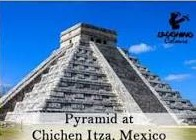
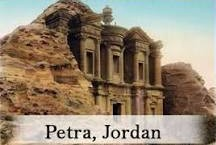
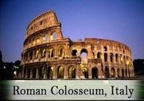

| image | information |
|---|---|
| Machu Picchu is an ancient Inca city located high in the Andes Mountains. It is one of the best-preserved archaeological sites in the world. | |
|  |
Chichen Itza was one of the greatest cities of the ancient Maya civilization. |
| Christ the Redeemer is one of the world's largest Art Deco statues. It stands with open arms as a symbol of peace, hope, and Christianity. | |
| Taj Mahal is one of the world's most beautiful monuments and is regarded as the finest example of Mughal architecture. | |
| The Great Wall of China is the longest man-made structure in the world. It was built to protect China from invasions by northern tribes and to guard important trade routes. | |
|  |
Petra is an ancient city carved directly into rose-colored sandstone cliffs. It was once the capital of the Nabataean Kingdom. |
|  |
Colosseum is the largest amphitheater ever built during the Roman Empire and remains one of Rome's most famous landmarks. |